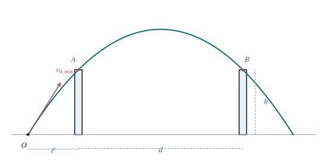

P0037 · 出版物习题 · 原书第 1.02 题
以最低初速越过两堵等高平行墙
独立优化墙顶之间的抛物线段，再用能量守恒确定最低发射速度与发射点。
1 题目
1.1 物理情境
两堵平行薄墙等高，墙高均为 ，两墙之间的水平间距为 。
1.2 物理过程
从第一堵墙外侧的某个地面位置斜抛小球，使其先越过近墙、再越过远墙。发射点至近墙的距离也可自由选择。
1.3 已知参数和理想化假设
小球视为质点，仅受恒定重力 ；墙厚、空气阻力和碰撞均忽略，擦过墙顶是临界可行状态。
1.4 求解目标
求地面发射的最小初速度、相应的发射角，以及发射点与近墙之间的距离。

最低初速时，轨迹通过两个墙顶。
2 思路与提示
以两堵墙顶为同高端点：先求这段运动最小的墙顶速度，再用能量守恒回推地面发射条件。
3 解答展开 / 收起
3.1 先证明两墙顶同时成为临界点
记任意可行发射的水平速度为 ，轨迹顶点为 。以地面为高度零点，抛物线及发射速度满足
两墙的横坐标相差 ，所以它们与顶点横坐标 的距离至少有一个不小于 。两处高度均须不低于 ，从而 。代入式（1），再由算术—几何平均不等式，得到任何可行轨迹的下界
最后一个等号要求 ；前一个等号要求轨迹顶点正处在两墙的中线，两堵墙顶均在轨迹上。这证明了临界轨迹的形状，而不只是预先猜测它。
3.2 构造达到下界的抛射
取 ，顶点在两墙正中。从近墙到顶点的水平距离为 ，所需时间为 ，故近墙顶处的竖直速度为 。因此墙顶速度与水平线成 ，其大小满足 。
从地面到近墙顶，机械能守恒给出 ；水平速度保持 。所以最低初速与相应发射角为
3.3 确定发射点的位置
从发射到经过近墙，竖直速度由 降至 。该段飞行时间及水平距离为
因为 ，；球先上升通过近墙顶，后下降通过远墙顶，整个轨迹满足越墙条件。
4 方法与讨论
原题有发射速度、角度和发射点三个自由量。以近墙顶作为中间状态，先解决同高两点之间的最小速度，再利用能量与速度分量回溯，能把三变量优化拆为两个直接的物理步骤。